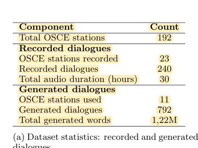
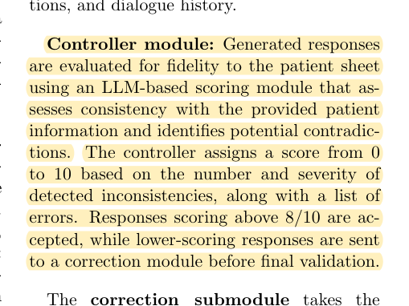
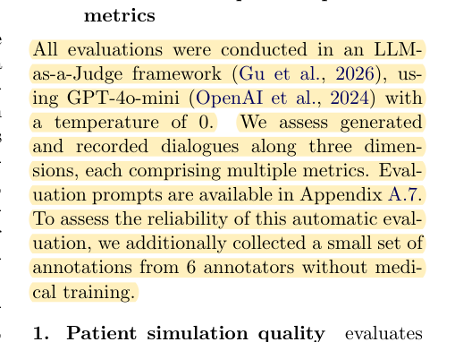

R06 · Virtual patients and OSCEs
Control-and-correction loops improve patients without establishing grading validity
A French OSCE Dialogue Dataset and Controllable Virtual Patient System for Clinical Training
Doria Bonzi, Tom Bourgeade, Fabrice Lefèvre, Irina Illina · 2026
arXiv:2606.28526; preprint
What the study investigates
The paper presents a French OSCE dialogue dataset and a controllable patient-generation pipeline, asking whether retrieval and reflective correction improve patient fidelity.
How it was studied
The authors collected 240 training dialogues in which students played the roles and generated 792 synthetic dialogues across 11 stations. The patient pipeline can include retrieval, generation, control, and correction. Responses below a control threshold enter up to three reflection cycles. Evaluation addresses patient quality, learner performance, and language quality.
Findings
Reflection generally improves information recall, while the additional benefit of retrieval depends on the configuration. Most metrics are produced by LLM judges. A small human language evaluation uses six annotators without medical training.
Limits of the evidence
The patients in the recorded training dialogues are student role players. The human language assessment is not a faculty item-level grading reference. Greater information recall is not always desirable: disclosing a fact before it is authorized can undermine an OSCE task.
How it informs DualGraph-OSCE
A strong role baseline should include generation, checking, and correction rather than a bare prompt alone. Our role endpoint uses the information required, permitted, and prohibited at the current turn, rather than recall of the entire case record. Dynamic dialogue evaluation and assessment on frozen transcripts must be reported separately.
Where to cite it
Related work, the definition of the role endpoint, and baseline configuration.
Possible manuscript wording
Retrieval and correction loops can improve virtual-patient fidelity. In OSCEs, however, case information must also satisfy current interaction conditions; overall information recall does not measure that requirement.
[R06·1]This is a manuscript-specific paraphrase, not a quotation from the source. The excerpts below define what the citation supports. The proposed method and its expected benefits are not findings of the cited paper.
Source passages and precise locations
Page numbers refer to physical pages in the saved original PDF, including any repository cover sheets. Compilation page numbers are listed separately. Yellow highlighting marks the passage used for the argument.
R06-E1Corpus size and station coverage
Original PDF page 4. Highlight compilation page 66. The highlight identifies the passage used here; consult the full original page for its context.

R06-E2Control and correction loop
Original PDF page 5. Highlight compilation page 67. The highlight identifies the passage used here; consult the full original page for its context.

R06-E3Scope of the human evaluation
Original PDF page 6. Highlight compilation page 68. The highlight identifies the passage used here; consult the full original page for its context.
